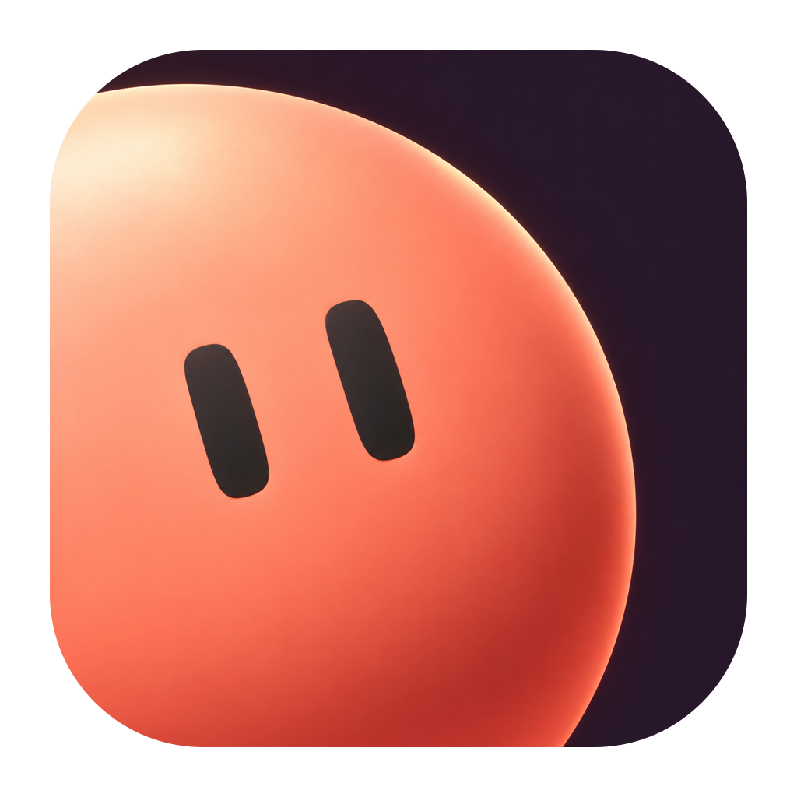

目录Contents
brand/tokens/tokens.json，不要从图片里量取。wuu。第 08 章中的产品界面是品牌体系的提案示意，不代表当前应用的样子；产品界面改造需要另行评审。
先弄清事实What we know, and what we assume
品牌判断建立在产品已经做到的事情上。中列来自代码和文档；右列是本手册采用的假设，还没有用户研究支持，需要后续验证。
现在的品牌The current brand, audited
小球这条线索是清楚的，但它在每个触点上是不同的东西。问题不在某一个设计，而在于没有规则决定它们的关系。

小球现在做什么What the ball already does
在产品里，小球不是装饰。它是会话里的助手，用眼睛告诉你它在做什么。这决定了品牌应该怎样对待它。
15 种活动状态都没有嘴。眼睛的高度、倾斜和视线方向承担全部信息。所以标识的核心是眼睛，不是圆。
头像按服务商取色，按模型换配饰。所以彩色的球属于其他 agent；Wuu 自己需要一个固定的颜色。
执行命令、编辑、搜索时，小球会变成对应的活动图形。这是产品功能表达，不是品牌标识；两者要分开管理。
定位与性格Positioning and character
Wuu 是在本地项目里和 AI agent 一起工作的桌面应用。
品牌要让人一眼看清 agent 正在做什么，并且愿意每天长时间使用它。
小球的视线总是朝向工作：在标识里看向文字，在会话里看向正在处理的内容。
不做：不让小球盯着用户卖萌或求关注。
文案先说结果和下一步；版式靠位置、留白和字重建立层级，只有一个角色元素。
不做：不用口号、感叹号和堆叠的寒暄。
个性来自小球短而少的动作：一次眨眼，一次回落。动作不挡住任何操作。
不做：不加 3D 质感、渐变、贴纸式插画或随机彩蛋。
看不清的状态、含糊的文案和抢眼的装饰都会让答案变成否。
高饱和的大面积色块、持续循环的动画和过小的灰字都通不过。
小球是点睛，不是支撑。版面需要靠自己的层级成立。
语言与语气Voice and tone
Wuu 说话像一位靠谱的同事：先讲结果，再讲原因，最后给出下一步。
| 场景 | 现在 | 改写 | 为什么 |
|---|---|---|---|
| 输入框占位 | 即刻开始 Get started | 描述要做的事 Describe the task | 占位文字告诉人该输入什么，而不是催促。 |
| 保存失败 | 保存失败 Failed to save | 设置没有保存，请重试。 Settings weren’t saved. Try again. | 说清是什么没完成，并给出下一步。 |
| 复制失败 | 复制失败 | 无法写入剪贴板 | 指出失败的具体环节。 |
| 深夜问候 | 夜深了，还要继续吗？ It’s late. Want to keep going? | 保留 | 简短、有人味，不推用户多做。 |
| 官网首屏 | 给想法留一点空间 | 在本地项目里，和 agent 一起把事做完。 Work with agents on your own projects. | 第一句话要说明产品是什么。 |
| 官网副标题 | Wuu 是开源的 coding agent。选好模型，从一个想法开始，一起做点什么吧。 | 读代码、改文件、运行命令；每一处改动都留给你检查。 | 用产品事实代替邀请语。 |
“现在”一列摘自 desktop/src/renderer/i18n/resources 与 landing/zh.html。改写是写法示例，落地前要按实际行为核对，例如失败后原设置是否保留。
三个方向Three directions, one question
三个方向回答同一个问题：小球在品牌里是什么？它们的差别在材料、尺度和颜色的职责，而不只是色板。
每个方向都放进同一组触点：组合标识、应用图标的四个尺寸、官网首屏、产品侧栏与会话、色彩。之后用同一组压力测试比较。
把小球当作一个排版元素：平面墨色、完整的圆、眼睛偏向右上。颜色留给其他 agent，品牌本身几乎只有墨与纸。
让小球从画面边缘探进来，尺度夸张，配一块高饱和的朱红色场。识别靠冲击力和裁切构图。
把小球做成一个有质感的软玩具：粉色、高光、投影，圆头字标，渐变背景。识别靠角色本身的可爱。
把小球当作一个排版元素：平面墨色、完整的圆、眼睛偏向右上。颜色留给其他 agent，品牌本身几乎只有墨与纸。
让小球从画面边缘探进来，尺度夸张，配一块高饱和的朱红色场。识别靠冲击力和裁切构图。
把小球做成一个有质感的软玩具：粉色、高光、投影，圆头字标，渐变背景。识别靠角色本身的可爱。
压力测试Stress test
漂亮的封面不能说明问题。五项测试都来自真实用途：浏览器标签、单色输出、暗色界面、与状态色并置、多个 agent 同屏。
| 测试 | A · 墨点 | B · 出框 | C · 软物 |
|---|---|---|---|
| 16 px 标签页图标 | Wuu 文档 Wuu 文档 ✓ 眼睛仍可辨认 | Wuu 文档 Wuu 文档 ✕ 只剩色块 | Wuu 文档 Wuu 文档 ✕ 渐变糊成一团 |
| 单色输出 | ✓ 镂空版直接可用 | 色场消失， 裁切失去依据 △ 可用，但失去色场 | ✕ 需要另画一套 |
| 暗色界面头像 | 正在读取 4 个文件 ✓ 反白后对比清楚 | 正在读取 4 个文件 △ 墨色球在暗底上消失 | 正在读取 4 个文件 △ 可读，但像贴纸 |
| 与错误状态并置 | 当前会话（选中） 命令失败 · 退出码 1 ✓ 选中与错误互不混淆 | 当前会话（选中） 命令失败 · 退出码 1 ✕ 朱红选中像报错 | 当前会话（选中） 命令失败 · 退出码 1 ✕ 浅粉与错误浅红相近 |
| 多个 agent 同屏 | ✓ Wuu 墨色，其他 agent 取色 | 只有一种 颜色可分 ✕ 色相单一，难区分 | △ 可区分，但画面嘈杂 |
选择 A，
借用 B 的一条规则Direction A, with one rule from B
墨点在所有测试中都成立，缺点是色彩弱。我们不给它加一个品牌强调色，而是把颜色交给产品里本来就存在的东西：其他 agent。
小球是什么What the ball is, and is not
小球是 Wuu 在屏幕上的存在感。它有三种用法，每一种有自己的规则；把它们混在一起，是现在品牌不一致的根源。
标识、应用图标、网站和物料中的 Wuu。形状、颜色、眼睛姿态全部固定。
只用第 03 章的资产，不重画、不做表情。
对话里 Wuu 自己的头像。颜色固定为墨色（暗色主题为纸色），眼睛随活动状态变化。
状态只由眼睛表达，见第 07 章。
子 agent、项目 agent、外部模型与服务商。同一张脸，换 agent 色；可以换形体与配饰。
Wuu 自己永远不用 agent 色。
同一屏中的三种用法：1 品牌符号 · 2 会话中的 Wuu · 3 其他 agent（示意）
小球的构造Construction
一个平面的圆，两只胶囊形的眼睛。所有识别都来自眼睛的位置和比例，所以这几组数不能改。
| 参数 | 值（D = 100） | 作用 |
|---|---|---|
| 眼宽 × 眼高 | 10.5 × 23 | 胶囊比例约 1 : 2.2，读作“眼睛”而不是“竖线” |
| 眼距（中心） | 20 | 两眼靠近，脸显得专注 |
| 视线中心 | +12, -10 | 看向右上；避免居中竖眼读成暂停键 |
| 眼轴倾斜 | 8° | 轻微歪头；也让两眼不再平行对称 |
| 外侧眼收窄 | 0.35 × 偏离度 | 平面圆也能读出球面 |
数值定义在 tokens.json → ball.optical；图形由 src/geometry.mjs 生成。
三种光学尺寸Optical sizes
同一双眼睛在 16 px 时不到 2 px 宽。小尺寸用更大的眼睛，并且仍然偏向右上，保证它读作一张在看东西的脸，而不是暂停键。
| 版本 | 渲染直径 | 眼宽 × 高 | 视线 | 倾斜 |
|---|---|---|---|---|
| 展示 Display | > 40 px | 10.5 × 23 | +12, -10 | 8° |
| 小 Small | 21–40 px | 13.5 × 28 | +9, -8 | 6° |
| 微 Micro | ≤ 20 px | 18.75 × 31.25 | +9.375, -9.375 | 0° |
导出资产时按最终渲染直径选版本；ballSVG({ px }) 会自动选择。不要把 Display 版缩小使用。


视线朝向内容The ball looks at the work
品牌符号的眼睛固定看向右上，也就是看向文字标识。版面里放小球时，让它看向这一页真正的内容。
连接模型服务后即可开始。
连接模型服务后即可开始。
连接模型服务后即可开始。
文字标识The wordmark
“wuu” 由同一个碗形画成：w 是两只碗共用一根更短、更细的中笔，u 是同一只碗加一根到基线的尾笔。
组合方式Lockups
所有尺寸用字标的 x 高度 X 表示。球的中心对齐 x 高度带的中线，所以它在字标上下各伸出一样多。
| 组合 | 用在 |
|---|---|
| 横式 | 默认。网站导航、文档站、README、页脚、演示文稿。 |
| 竖式 | 接近正方形的版面：启动画面、活动海报、贴纸。 |
| 只用小球 | 名字已经出现在旁边时：应用内、浏览器标签、社交头像。 |
| 只用字标 | 很少用。小球已经在同一视野里时，例如图标旁的应用名。 |
安全空间与最小尺寸Clear space and minimum sizes
安全空间里不放文字、图片边缘或其他标识。最小尺寸之下，改用只有小球的版本。
| 版本 | 安全空间 | 屏幕最小 | 印刷最小 |
|---|---|---|---|
| 横式 | 1 X | X ≥ 7 px（宽约 36 px） | 宽 14 mm |
| 竖式 | 1 X | X ≥ 9 px | 宽 16 mm |
| 小球 | 0.25 D | 12 px | 4 mm |
16 px 的网站图标使用 Micro 版小球，并且不带背景色块。
圆形裁切内留 0.25 D
色彩版本Colour versions
标识只有墨与纸两种颜色。单色输出用镂空版：眼睛是透出的背景。
标识与背景的对比至少 3 : 1。放在照片上时，只放在平静、明度均匀的区域；做不到就先加一块纸色或墨色的底。
误用Misuse
这些改动都会削弱识别，或者让小球变成另一种东西。
需要变化时，从已有的资产、光学尺寸和状态姿态中选择；它们已经覆盖了实际用途。
名称的写法Writing the name
正文里写 Wuu，命令和包名写 wuu，小写的 “wuu” 只存在于标识里。
| 场景 | 写法 | 示例 |
|---|---|---|
| 中文与英文正文、标题、界面 | Wuu | 在 Wuu 里打开项目。 Open a project in Wuu. |
| 命令、包名、路径 | wuu（等宽字体） | 运行 wuu exec；配置在 ~/.wuu。 |
| 标识 | 自绘字标 “wuu” | 只使用第 03 章的资产。 |
| 英文所有格 | Wuu’s | Wuu’s permission modes |
| 应用名、窗口标题 | Wuu | macOS 菜单栏与 Dock 中显示 “Wuu”。 |
Wuu 是在本地项目里和 AI agent 一起工作的桌面应用。安装后，在终端里也可以运行 wuu exec，会话保存在 ~/.wuu。
Wuu is a desktop app for working with AI agents on local projects. After installing, you can also run wuu exec in a terminal; sessions live in ~/.wuu.
当前仓库的 README、官网和站点标题用的是小写 “wuu”，采用本手册后需要统一修改；这不在本次交付范围内。名称没有官方中文译名，也不要自行音译。
色彩的分工What each colour is for
颜色按职责分成五组。每一组只做自己的事：品牌色不表示状态，状态色不做装饰，agent 色不上文字。
判断用哪种颜色时，先问它要传达什么：这是 Wuu，这是哪个 agent，发生了什么，还是可以操作。说不出来，就用中性色。
| 组 | 颜色 | 可以 | 不可以 |
|---|---|---|---|
品牌 · 墨与纸 这是 Wuu | 标识、Wuu 的小球、主按钮、正文 | 不换成其他颜色，也不做渐变 | |
中性色阶 承载内容 | 底色、表面、分隔线、次要文字、选中态 | 不用低对比灰字承载必要信息 | |
agent 色 这是哪个 agent | 其他 agent 的球身、插画、按 agent 区分的图表 | 不上文字、按钮、状态和 Wuu 自己 | |
功能状态色 发生了什么 | 成功、警告、错误、信息；总是配文字或图标 | 不做品牌装饰，不单独用颜色表达 | |
交互 可以操作 | 主按钮用墨色；键盘焦点用 2 px 蓝色环 | 不为每个选中项加彩色 |
焦点环与信息色同为蓝色：两者都表示“这里可以关注”，并且都不与品牌色竞争。
中性色 · 亮色Neutrals, light
色相 100°、彩度 0.004 左右的“石色”：比冷灰温和，比米色中性。每一级按与底色的对比度选出，而不是等距取值。
米色让代码和截图偏黄，也接近其他 AI 产品的品牌底色；蓝灰显得冰冷。石色在长时间阅读下最安静，墨色的小球也最干净。
对比度按 WCAG 2 计算：表面一栏为正文文字在其上的对比度，其余为与底色 #F7F7F4 的对比度。正文至少 4.5 : 1，大字与控件边界至少 3 : 1。
中性色 · 暗色Neutrals, dark
暗色不是亮色的反相。底色压到接近墨色，表面逐级提亮；文字不用纯白，避免在暗底上发光刺眼。
表面一栏为正文文字在其上的对比度，其余为与底色 #131311 的对比度。
agent 色Agent colours
七个颜色的 OKLCH 明度都是 0.84，彩度相同，所以没有哪一个更抢眼。它们只出现在球身上，眼睛始终是墨色。
状态色与品牌色Status next to brand
状态色饱和、偏深，而且面积小；agent 色浅、柔和，只在球上。两者在明度上相差很远，所以放在一起也不会被误读。
用量比例Proportions
中性色撑起画面，墨色给出重心，彩色只占很小的面积。比例随场景变化，但彩色从不做大面积背景，只有插画和社交图例外。
字体Typefaces
品牌传播用三款开源字体。产品界面继续使用系统字体，尊重用户在设置中的选择。
字号层级Type scale
用于官网、文档、社交图和物料。层级靠字号和字重拉开，同一版面最多用四级。
中文标题用 Bold 700，与 Hanken 的 600 视觉重量相当；中文不加负字距。
产品界面使用自己的比例：界面字号默认 14.5 px，其他层级按比例派生，代码字号独立。见 docs/en/project/design-system.md。
| 层级 | 字号 / 行高 / 字重 | 示例 |
|---|---|---|
| display | 72 / 1.05 / 600 字距 -0.02 em |
|
| headline | 44 / 1.12 / 600 字距 -0.01 em |
|
| title | 28 / 1.25 / 600 字距 -0.005 em |
|
| subtitle | 20 / 1.4 / 500 | |
| body | 16 / 1.65 / 400 | |
| small | 14 / 1.55 / 400 | |
| caption | 12 / 1.5 / 500 字距 0.01 em |
中英混排Setting Chinese with Latin
Wuu 的文字里总有英文、命令和数字。规则的目标是让两种文字在同一行里节奏一致。
| 项目 | 中文 | 英文 |
|---|---|---|
| 正文行高 | 1.7 | 1.6 |
| 理想行长 | 28–40 字 | 60–75 字符 |
| 段间距 | 0.8 行 | 0.8 行 |
| 强调 | 字重 600/700 | 字重 600，不用斜体 |
| 标题字距 | 0 | −0.01 至 −0.02 em |
wuu exec 后，查看输出。中文句子用全角标点；命令保持原样~/.wuu/config.toml。路径、命令、变量名用等宽字体排版示例In use
长文、密集表格和短标签用同一套规则，只改变字号和间距。
| 模型 | 服务 | 上下文 |
|---|---|---|
claude-sonnet-5-5 | Anthropic | 1M |
gpt-5 | OpenAI | 400K |
qwen3-coder | 阿里云 | 256K |
deepseek-v4 | DeepSeek | 128K |
示例数据为虚构。
图标Icons
界面图标只用产品已有的 Wuu 图标：24 单位网格、1.75 描边、圆头圆角、开放轮廓。官网和文档也用这一套，不另画一种风格。
来源：desktop/src/shared/iconArtwork.ts，本页直接读取该文件绘制。
插画：一群小球Illustration
插画只讲一件事：谁在做什么。角色只有小球，道具只有简单的卡片、线条和方块，它们代表界面里的内容。
截图与影像Screenshots and imagery
Wuu 最好的图像是它自己的界面。截图是主要影像；照片不属于品牌识别的一部分。
大尺寸裁切构图The large-format crop
借用自方向 B 的唯一规则：在封面、首屏和社交图这种大幅面上，小球可以大到被画面边缘裁掉一部分。
| 条件 | 要求 |
|---|---|
| 幅面 | 短边 ≥ 600 px 的画面；标识、头像、图标不适用 |
| 尺寸 | 球的直径 ≥ 画面短边的 60% |
| 眼睛 | 两只眼完整可见，离裁切边至少一个眼宽 |
| 裁切 | 只被一到两条边裁切；一个画面只放一只裁切球 |
| 文字 | 不压在球上；放在球对面的留白里 |
| 方向 | 品牌姿态的眼睛在右上，所以通常裁左边和下边；裁右边时只裁掉很少一部分 |
应用图标只裁底边，是这条规则在小画幅上的唯一例外，见第 08 章。
运动性格How the ball moves
小球像一个有分量、很专注的东西：眼睛先动，身体几乎不动。它的动作短、少，而且每一个动作都对应一件真实发生的事。
| 动作 | 时长 | 什么时候 |
|---|---|---|
| 视线转移 | 180 ms · ease-out | 状态改变 |
| 眨眼 | 60 + 40 + 90 ms | 空闲、聆听、等你确认时；间隔 3.8–8.2 s 随机 |
| 回落 | 280 ms · 压扁 ≤ 6% | 一轮任务完成，只发生一次 |
| 工作中微动 | 周期 1600 ms | 思考与执行期间；隐藏或完成即停止 |
时长与进入、离开缓动沿用产品现有的 --motion-*、--ease-out 与 --ease-in；只新增一条用于回落的 ease-in-out。
状态States
产品现有的 15 种活动归为 8 个状态姿态。每个状态只改变眼睛；颜色和形体不变。
产品里的活动图形（过程行中的终端提示符、铅笔、弧线）是功能反馈，由产品维护，不在品牌资产里重画。
| 姿态 | 状态 | 对应产品活动 | 眼睛怎么动 | 含义 |
|---|---|---|---|---|
| 空闲 rest | idle · responding | 面向右上，偶尔眨眼 | 空闲、回复正在输出 | |
| 聆听 listen | compose · sending | 看向下方的输入框 | 你正在输入 | |
| 思考 think | thinking · compact | 看向左上，缓慢漂移 | 推理与整理上下文 | |
| 工作 work | search · edit · command · read · tool | 看向下方的步骤，左右扫视 | 执行工具与命令 | |
| 等你确认 wait | waiting | 转向你，眼睛略微睁大 | 需要授权或回答 | |
| 完成 done | 一轮结束 | 一次眨眼 + 一次回落 | 一轮任务完成 | |
| 失败 failed | failed | 眼睛半闭、低头，不晃动 | 任务失败 | |
| 暂停 paused | interrupted · queued | 眼睛几乎闭上 | 被中断或排队中 |
识别与反馈的边界Identity or feedback
小球在两种情况下出现：作为品牌符号，它几乎不动；作为工作中的 Wuu，它用眼睛报告状态。两种用法不能互换。
| 品牌符号 | 工作中的 Wuu | |
|---|---|---|
| 位置 | 标识、图标、导航、文档 | 会话头像、首页问候 |
| 动作 | 静止；官网首屏可以进场一次（一次眨眼 + 回落） | 随状态改变眼睛 |
| 跟随指针 | 只在官网首屏，只动眼睛 | 不跟随 |
| 循环 | 无 | 仅思考与工作期间，≤ 1600 ms 周期 |
不要把小球当作下载、保存等通用操作的加载图标，也不要在按钮悬停时让它跳动。
减少动态效果Reduced motion
系统的“减少动态效果”和应用内的动效设置效果相同：状态直接切换到最终姿态，没有眨眼、回落和循环。
px: 28, state: "work",
reducedMotion: settings.motion === "reduce"
});
// 未传入时跟随 prefers-reduced-motion
| 事件 | 默认 | 减少动态效果 |
|---|---|---|
| 开始思考 | →→→ | 直接切换 |
| 完成 | →→→ | 直接切换 |
| 空闲 | →→→ | 直接切换 |
应用图标App icon
一只墨色的小球坐在图标底边上，只露出上半身和眼睛。它在程序坞里是一个穹顶形，和圆形、方形的图标都不一样。
| 参数 | 值（1024 网格） |
|---|---|
| 图标主体 | 824 × 824，内缩 100，连续圆角 185 |
| 小球 | 直径 660，中心 (512, 650)，被底边裁去 56 |
| 眼睛 | 品牌姿态；按渲染尺寸选择光学版本 |
| 变体 | 亮色（默认）· 暗色 · 单色 |
分层源文件（底板、小球、眼睛）在 brand/assets/app-icon/，可以导入 Icon Composer 等工具。替换产品里的图标需要另行评审。
![]()
![]()
产品界面 · 亮色Product, light
品牌在产品里只出现在三处：侧栏顶部的标识、会话中 Wuu 的头像、子 agent 的彩色小球。其余全部交给中性色和排版。
提案示意，非当前产品界面；示例数据。
产品界面 · 暗色Product, dark
暗色主题里 Wuu 的小球换成纸色，agent 小球用暗色一组；层级靠表面明度，而不是阴影。
diff 的增删底色使用状态色的暗色浅底，文字保持 4.5 : 1 以上。
提案示意，非当前产品界面；示例数据。
首页空状态Empty home
没有打开会话时，小球和问候并排出现。这是产品里小球最大的地方，但它仍然安静：只在空闲时偶尔眨眼。
提案示意，非当前产品界面；示例数据。
官网首页Website
首屏只做三件事：说清产品是什么、给出下载、让人记住小球。大尺寸裁切的小球占据右下角，文字在左侧留白里。
提案示意。文案基于当前产品事实，发布前需与官网内容负责人核对。
文档站与 READMEDocs and README
文档是阅读场景：标识小，正文宽松，提示框用表面色而不是彩色。README 顶部用横幅，并提供亮暗两张图。
<source media="(prefers-color-scheme: dark)"
srcset="brand/assets/social/readme-banner-dark.png">
<img alt="Wuu"
src="brand/assets/social/readme-banner-light.png">
</picture>
提案示意；是否替换 README 与文档站主题需另行决定。
安装窗口与幻灯片Installer and slides
安装窗口只说一件事：把 Wuu 拖进“应用程序”。应用图标本身就是小球，所以背景里只有一条路径和一行提示，不再放第二只小球。
演示文稿的封面沿用封面页版式；内页用手册的 12 栏网格与字号层级，不加页眉装饰。
安装背景为提案；替换 desktop/build/dmg-background*.png 需另行评审。
设计变量Tokens
所有数值只定义一次：brand/tokens/tokens.json。CSS、标识、图标、手册页面都从它生成。
.hero {
background: var(--wuu-brand-canvas);
color: var(--wuu-brand-text);
font: var(--wuu-brand-type-display-weight)
var(--wuu-brand-type-display-size)/1.05
var(--wuu-brand-font-brand);
}
/* 暗色：在祖先元素上加 .wuu-brand-dark */
变量名带 --wuu-brand- 前缀，官网和物料可以直接使用，不会和产品内部变量冲突。
| 品牌变量 | 产品现有角色 | 亮 | 说明 |
|---|---|---|---|
| canvas | --paper | #F7F7F4 | 底色 |
| surface | --surface-1 | #FFFFFF | 卡片、输入框 |
| surface-2 | --surface-2 | #F1F0ED | 次级区域 |
| surface-3 / selection | --selection-surface | #E8E8E5 | 选中 |
| text | --ink-strong | #141411 | 标题与正文 |
| text-2 | --ink-soft | #4D4C4A | 次要正文 |
| text-3 | --ink-tertiary | #6E6D6A | 说明、元信息 |
| text-4 | --ink-faint | #908F8C | 占位、禁用 |
| line-1 | --hairline-soft | #E8E7E4 | 表面内分隔 |
| line-2 | --hairline | #D7D6D3 | 区块边界 |
| boundary | --control-boundary | #959592 | 控件边界 3 : 1 |
| focus | --focus-ring | #246CC1 | 键盘焦点 |
| success … info | --success … --info | #057D38 | 状态 |
| ink | --wuu-accent | #141411 | 现为朱红，建议改为墨色 |
产品角色名来自 desktop/src/renderer/styles/base.css。本次交付不修改产品样式；是否采用、何时采用需要单独评审，并同步更新设计系统文档与看板。
素材清单Assets
所有素材都有生成器。改动 tokens.json 或页面源文件后，重新运行生成命令，不要手改导出文件。
npm --prefix brand run build
# 标识、图标、CSS 变量、手册 HTML
npm ci --prefix desktop
npm --prefix brand run render
# 分享图、安装背景、文档预览图、PDF
渲染需要本机安装思源黑体（Source Han Sans SC 或 Noto Sans CJK SC）；缺少时脚本会停止并提示。
| 路径 | 内容 | 格式 |
|---|---|---|
| brand/assets/logo/wuu-symbol[-small|-micro]-*.svg | 小球：三种光学尺寸 × 墨 / 纸 / 黑 / 白 | SVG |
| brand/assets/logo/wuu-wordmark-*.svg | 文字标识 | SVG |
| brand/assets/logo/wuu-lockup-horizontal[-small|-micro]-*.svg | 横式组合；X ≤ 28 px 用 small，X ≤ 14 px 用 micro | SVG |
| brand/assets/logo/wuu-lockup-stacked-*.svg | 竖式组合 | SVG |
| brand/assets/app-icon/ | 亮 / 暗 / 单色图标；1024–16 px；分层源文件 | SVG · PNG |
| brand/assets/favicon/ | 网站图标（随系统明暗）、16 / 32 px、Apple Touch 180 px | SVG · PNG |
| brand/assets/social/ | 分享图（中 / 英）、README 横幅（亮 / 暗）、发布卡片、头像 | PNG |
| brand/assets/installer/ | macOS 安装窗口背景 720 × 420 与 @2x | PNG |
| brand/assets/motion/ | 动效参考实现与交互演示 | JS · HTML |
| brand/tokens/ | 设计变量源文件与生成的 CSS | JSON · CSS |
| brand/fonts/ | Hanken Grotesk、Fragment Mono 与授权文件 | TTF · OFL |
| brand/manual/index.html | 本手册；浏览器中打开即可阅读 | HTML |
授权与待验证事项Licences and open items
| 素材 | 来源与授权 |
|---|---|
| 小球与字标 | 本手册原创几何，由 src/geometry.mjs 生成，不是任何字体的轮廓。随仓库分发，适用仓库许可证（MIT）；MIT 不授予商标权，品牌资产的使用条款需要维护者另行确认。 |
| Hanken Grotesk | SIL OFL 1.1，The Hanken Grotesk Project Authors；随仓库分发，附 OFL.txt |
| Fragment Mono | SIL OFL 1.1，The Fragment-Mono Project Authors；随仓库分发，附 OFL.txt |
| 思源黑体 | SIL OFL 1.1，Adobe；不随仓库分发，从官方发布获取 |
| 界面图标 | 产品自有图形 desktop/src/shared/iconArtwork.ts |
| 现状截图 | 开发预览与仓库内的现有资产（提交 ef1713674），示例数据；仅用于现状对比 |
产品中现有的头像几何来自 blobatar（MIT）；本手册的小球是新绘制的，不依赖该库。
社交与发布Social and releases
分享图和发布卡片用同一套版式：左上标识，左侧大标题，右下一只小球。发布卡片用“完成”姿态。
模板在 src/templates.mjs，改动文字后重新渲染即可导出 PNG。
和 agent 一起把事做完。
on your own projects.